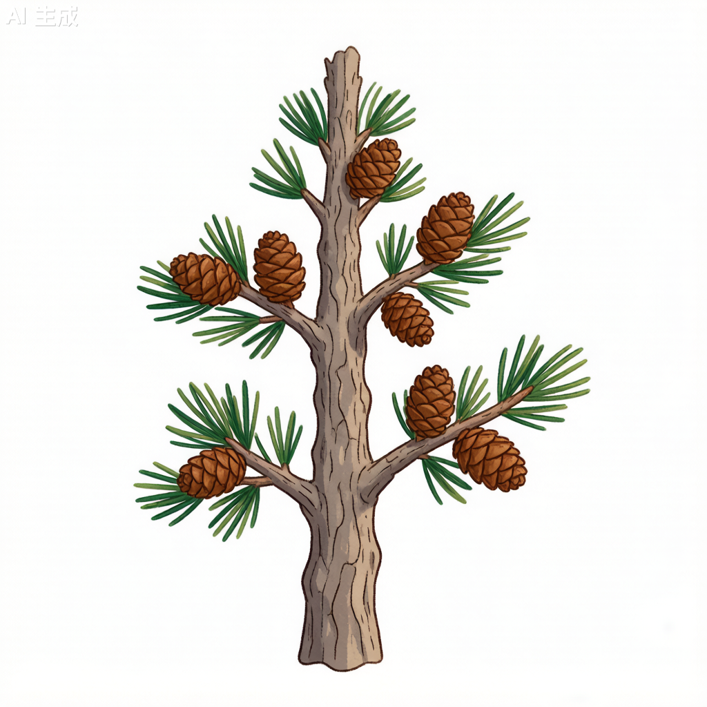

油松 Pinus tabuliformis

形态特征
油松（Pinus tabuliformis）为常绿乔木，高15–25米，胸径可达1米以上。树皮灰褐色或褐灰色，裂成不规则较厚的鳞状块片，裂缝及上部树皮红褐色。大枝平展或斜向上，老树树冠平顶。冬芽长圆形，微具树脂，芽鳞红褐色。针叶2针一束，粗硬，长10–15厘米，径约1.5毫米，暗绿色，两面具气孔线，叶鞘宿存。树脂道5–8个或更多，边生，多数生于背面。雄球花圆柱形，在新枝下部聚生成穗状，黄色；雌球花绿紫色。球果卵形或圆卵形，长4–9厘米，有短梗，向下弯垂，成熟前绿色，熟时淡黄色或淡褐黄色。种子卵圆形，连翅长1.5–2厘米。花期4–5月，球果翌年10月成熟。
分布与生境
油松为中国特有树种，自然分布横跨东北、华北、西北和西南各地，是松属中分布最北的物种之一。主要分布于辽宁、内蒙古、河北、山西、陕西、甘肃、宁夏、青海、四川北部等地。喜光、深根性，喜干冷气候，在土层深厚、排水良好的酸性、中性或钙质黄土上均能生长良好，在-25℃的低温下也能安全越冬。
分类学
油松为松科（Pinaceae）松属（Pinus）植物。种加词"tabuliformis"意为"平台状的"，指老树形成的平顶树冠。油松是松属双维管束亚属（Pinus subg. Pinus）的典型代表，与同属的赤松（P. densiflora）和华山松（P. armandii）在分布区上有所重叠，但可通过针叶数量（2针）、树脂道位置（边生）和球果形状鉴别。
生态习性
油松为强阳性树种，喜光，幼树不耐阴。深根性，主根可深入土层2米以上，侧根发达，抗风能力强。耐寒性强，可耐-30℃低温；耐旱性强，在年降水量300–600毫米的地区生长良好；耐瘠薄，在石质山地和黄土高原均能生长。生长速度中等，20–30年进入生长盛期。寿命长，可达500年以上。油松是华北地区重要的建群种，常形成纯林或与栎类组成针阔混交林。
利用与文化
油松是中国北方最重要的用材树种之一。木材材质坚硬，纹理直，富含松脂，耐久用，可供建筑、电杆、矿柱、造船、家具等用。树干可割取松脂，提取松节油；树皮可提取栲胶。松节、松针和花粉均可供药用。油松四季常青，树形挺拔苍劲，是北方园林绿化的骨干树种。在北京、西安等古都，众多千年古松被誉为"国宝"。油松也是水土保持和荒山造林的首选树种，在黄土高原的生态恢复中发挥关键作用。
参考文献
- 《中国植物志》第7卷: 263页. 科学出版社.
- 徐化成等. 1998. 油松天然林地理分布规律的研究. 林业科学.
- 王九龄. 2000. 油松生态学特性及造林技术. 中国林业出版社.